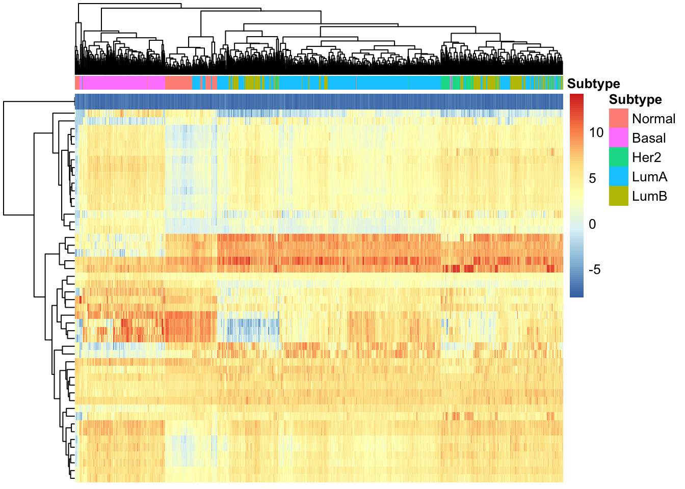

Differential Expression Analysis of BRCA samples
Overview
This document contains the final project for the “Introduction to RNA-Seq” module, part of the Bioinformatics and Statistics II class given at LCG-UNAM in February 2022. The original class material from Dr. Leonardo Collado-Torres can be found here.
In this project, we will use the recount3 R package to download RNA-Seq data from The Cancer Genome Atlas project, obtaining all the BRCA samples. We will then evaluate the quality of the downloaded data, explore the available sample attributes, select a subset of these to build a statistical model, and perform differential expression analysis.
.
Requirements
We will need R 4.1.x, which can be installed from CRAN, and the following packages.
library("sessioninfo")
# To download data and generate RangedSummarizedExperiment data object
library("recount3")
# To access data on tumor subtype
library("TCGAbiolinks")
# To normalize counts
library("edgeR")
# To plot results
library("ggplot2")
library("pheatmap")
# For differential expression analysis
library("limma")## Reproducibility information
options(width = 120)
session_info()## ─ Session info ───────────────────────────────────────────────────────────────────────────────────────────────────────
## setting value
## version R version 4.0.3 (2020-10-10)
## os Ubuntu 20.04 LTS
## system x86_64, linux-gnu
## ui X11
## language (EN)
## collate en_US.UTF-8
## ctype en_US.UTF-8
## tz Etc/UTC
## date 2022-02-11
##
## ─ Packages ───────────────────────────────────────────────────────────────────────────────────────────────────────────
## package * version date lib source
## AnnotationDbi 1.52.0 2020-10-27 [1] Bioconductor
## askpass 1.1 2019-01-13 [2] RSPM (R 4.0.3)
## assertthat 0.2.1 2019-03-21 [2] RSPM (R 4.0.3)
## Biobase * 2.50.0 2020-10-27 [1] Bioconductor
## BiocFileCache 1.14.0 2020-10-27 [1] Bioconductor
## BiocGenerics * 0.36.1 2021-04-16 [1] Bioconductor
## BiocParallel 1.24.1 2020-11-06 [1] Bioconductor
## biomaRt 2.46.3 2021-02-09 [1] Bioconductor
## Biostrings 2.58.0 2020-10-27 [1] Bioconductor
## bit 4.0.4 2020-08-04 [1] RSPM (R 4.0.5)
## bit64 4.0.5 2020-08-30 [1] RSPM (R 4.0.5)
## bitops 1.0-6 2013-08-17 [1] RSPM (R 4.0.3)
## blob 1.2.1 2020-01-20 [1] RSPM (R 4.0.3)
## bookdown 0.21 2020-10-13 [1] RSPM (R 4.0.2)
## cachem 1.0.4 2021-02-13 [2] RSPM (R 4.0.3)
## cli 2.3.0 2021-01-31 [2] RSPM (R 4.0.3)
## colorspace 2.0-0 2020-11-11 [1] RSPM (R 4.0.3)
## crayon 1.4.1 2021-02-08 [2] RSPM (R 4.0.3)
## curl 4.3 2019-12-02 [2] RSPM (R 4.0.3)
## data.table 1.13.6 2020-12-30 [1] RSPM (R 4.0.3)
## DBI 1.1.1 2021-01-15 [1] RSPM (R 4.0.3)
## dbplyr 2.1.0 2021-02-03 [1] RSPM (R 4.0.3)
## DelayedArray 0.16.3 2021-03-24 [1] Bioconductor
## digest 0.6.27 2020-10-24 [2] RSPM (R 4.0.3)
## downloader 0.4 2015-07-09 [1] RSPM (R 4.0.3)
## dplyr 1.0.4 2021-02-02 [1] RSPM (R 4.0.3)
## edgeR * 3.32.1 2021-01-14 [1] Bioconductor
## ellipsis 0.3.1 2020-05-15 [2] RSPM (R 4.0.3)
## evaluate 0.14 2019-05-28 [2] RSPM (R 4.0.3)
## fastmap 1.1.0 2021-01-25 [2] RSPM (R 4.0.3)
## generics 0.1.0 2020-10-31 [1] RSPM (R 4.0.3)
## GenomeInfoDb * 1.26.7 2021-04-08 [1] Bioconductor
## GenomeInfoDbData 1.2.4 2022-02-11 [1] Bioconductor
## GenomicAlignments 1.26.0 2020-10-27 [1] Bioconductor
## GenomicRanges * 1.42.0 2020-10-27 [1] Bioconductor
## ggplot2 * 3.3.3 2020-12-30 [1] RSPM (R 4.0.3)
## glue 1.4.2 2020-08-27 [2] RSPM (R 4.0.3)
## gtable 0.3.0 2019-03-25 [1] RSPM (R 4.0.3)
## hms 1.0.0 2021-01-13 [1] RSPM (R 4.0.3)
## htmltools 0.5.1.1 2021-01-22 [2] RSPM (R 4.0.3)
## httr 1.4.2 2020-07-20 [2] RSPM (R 4.0.3)
## IRanges * 2.24.1 2020-12-12 [1] Bioconductor
## jsonlite 1.7.2 2020-12-09 [2] RSPM (R 4.0.3)
## knitr 1.31 2021-01-27 [2] RSPM (R 4.0.3)
## lattice 0.20-41 2020-04-02 [3] CRAN (R 4.0.3)
## lifecycle 1.0.0 2021-02-15 [2] RSPM (R 4.0.3)
## limma * 3.46.0 2020-10-27 [1] Bioconductor
## locfit 1.5-9.4 2020-03-25 [1] RSPM (R 4.0.3)
## magrittr 2.0.1 2020-11-17 [2] RSPM (R 4.0.3)
## Matrix 1.3-2 2021-01-06 [3] RSPM (R 4.0.3)
## MatrixGenerics * 1.2.1 2021-01-30 [1] Bioconductor
## matrixStats * 0.58.0 2021-01-29 [1] RSPM (R 4.0.3)
## memoise 2.0.0 2021-01-26 [2] RSPM (R 4.0.3)
## munsell 0.5.0 2018-06-12 [1] RSPM (R 4.0.3)
## openssl 1.4.3 2020-09-18 [2] RSPM (R 4.0.3)
## pheatmap * 1.0.12 2019-01-04 [1] RSPM (R 4.0.3)
## pillar 1.4.7 2020-11-20 [2] RSPM (R 4.0.3)
## pkgconfig 2.0.3 2019-09-22 [2] RSPM (R 4.0.3)
## plyr 1.8.6 2020-03-03 [1] RSPM (R 4.0.3)
## prettyunits 1.1.1 2020-01-24 [2] RSPM (R 4.0.3)
## progress 1.2.2 2019-05-16 [1] RSPM (R 4.0.3)
## purrr 0.3.4 2020-04-17 [2] RSPM (R 4.0.3)
## R.methodsS3 1.8.1 2020-08-26 [1] RSPM (R 4.0.3)
## R.oo 1.24.0 2020-08-26 [1] RSPM (R 4.0.3)
## R.utils 2.10.1 2020-08-26 [1] RSPM (R 4.0.3)
## R6 2.5.0 2020-10-28 [2] RSPM (R 4.0.3)
## rappdirs 0.3.3 2021-01-31 [2] RSPM (R 4.0.3)
## RColorBrewer 1.1-2 2014-12-07 [1] RSPM (R 4.0.3)
## Rcpp 1.0.6 2021-01-15 [2] RSPM (R 4.0.3)
## RCurl 1.98-1.2 2020-04-18 [1] RSPM (R 4.0.3)
## readr 1.4.0 2020-10-05 [1] RSPM (R 4.0.3)
## recount3 * 1.0.7 2021-02-11 [1] Bioconductor
## rlang 0.4.10 2020-12-30 [2] RSPM (R 4.0.3)
## rmarkdown 2.6 2020-12-14 [1] RSPM (R 4.0.3)
## Rsamtools 2.6.0 2020-10-27 [1] Bioconductor
## RSQLite 2.2.3 2021-01-24 [1] RSPM (R 4.0.3)
## rstudioapi 0.13 2020-11-12 [2] RSPM (R 4.0.3)
## rtracklayer 1.50.0 2020-10-27 [1] Bioconductor
## rvest 0.3.6 2020-07-25 [1] RSPM (R 4.0.3)
## S4Vectors * 0.28.1 2020-12-09 [1] Bioconductor
## scales 1.1.1 2020-05-11 [1] RSPM (R 4.0.3)
## sessioninfo * 1.1.1 2018-11-05 [1] RSPM (R 4.0.3)
## stringi 1.5.3 2020-09-09 [2] RSPM (R 4.0.3)
## stringr 1.4.0 2019-02-10 [2] RSPM (R 4.0.3)
## SummarizedExperiment * 1.20.0 2020-10-27 [1] Bioconductor
## TCGAbiolinks * 2.18.0 2020-10-27 [1] Bioconductor
## TCGAbiolinksGUI.data 1.10.0 2020-10-29 [1] Bioconductor
## tibble 3.0.6 2021-01-29 [2] RSPM (R 4.0.3)
## tidyr 1.1.2 2020-08-27 [1] RSPM (R 4.0.3)
## tidyselect 1.1.0 2020-05-11 [1] RSPM (R 4.0.3)
## vctrs 0.3.6 2020-12-17 [2] RSPM (R 4.0.3)
## withr 2.4.1 2021-01-26 [2] RSPM (R 4.0.3)
## xfun 0.21 2021-02-10 [2] RSPM (R 4.0.3)
## XML 3.99-0.5 2020-07-23 [1] RSPM (R 4.0.3)
## xml2 1.3.2 2020-04-23 [2] RSPM (R 4.0.3)
## XVector 0.30.0 2020-10-27 [1] Bioconductor
## yaml 2.2.1 2020-02-01 [2] RSPM (R 4.0.3)
## zlibbioc 1.36.0 2020-10-27 [1] Bioconductor
##
## [1] /__w/_temp/Library
## [2] /usr/local/lib/R/site-library
## [3] /usr/local/lib/R/libraryproc.time()## user system elapsed
## 10.012 0.437 12.819